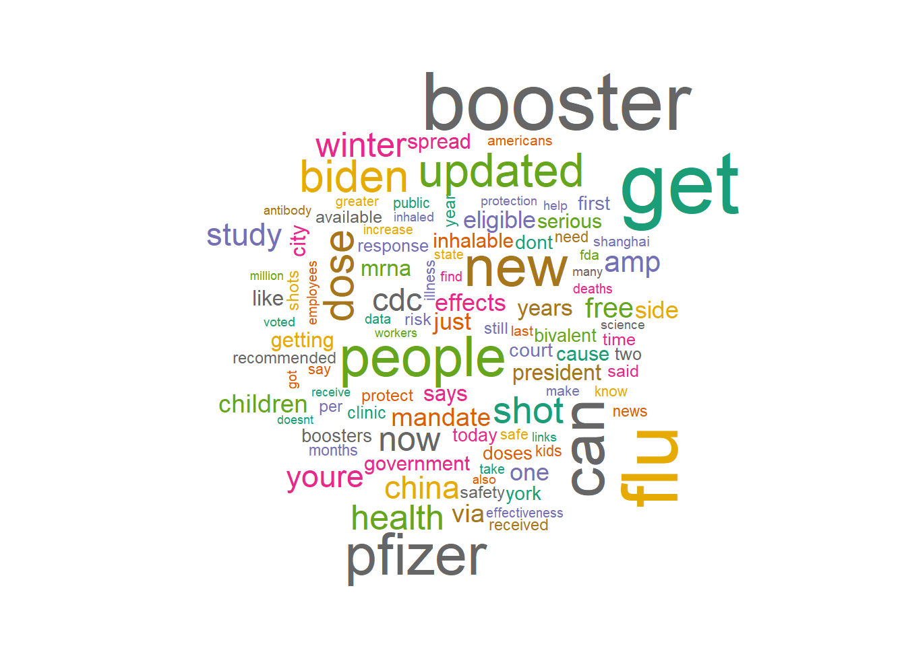

In this project, I am going to predict the Sentiments of COVID-19 Vaccination tweets. The data I have used is collecting tweets on the topic “Covid-19 Vaccination” (web scraping) and preparing the data. The data was gathered from Twitter and I’m going to use the R environment to implement this project. During the pandemic, lots of studies carried out analyses using Twitter data.
In the previous blog I have mentioned that I have access to only the last 7 days of tweets. However, I have applied for academic access to Twitter API that allows me to collect more tweets for my analysis. I will be using the Premium search rather than the Standard search for tweets using Twitter API.
##Loading important libraries
Code
library(twitteR) #R package which provides access to the Twitter APIlibrary(tm) #Text mining in R
Loading required package: NLP
Code
library(lubridate) #Lubridate is an R package that makes it easier to work with dates and times.
Attaching package: 'lubridate'
The following objects are masked from 'package:base':
date, intersect, setdiff, union
Code
library(quanteda) #Makes it easy to manage texts in the form of a corpus.
library(tidytext) #Applies the principles of the tidyverse to analyzing text.library(tidyr) #Helps to get tidy datalibrary(gridExtra) #Arrange multiple grid-based plots on a page, and draw tables
Attaching package: 'gridExtra'
The following object is masked from 'package:dplyr':
combine
Code
library(grid) #Produce graphical outputlibrary(rtweet) #Collecting Twitter Data
Attaching package: 'rtweet'
The following object is masked from 'package:purrr':
flatten
The following object is masked from 'package:twitteR':
lookup_statuses
Code
library(syuzhet) #Returns a data frame in which each row represents a sentence from the original file
Attaching package: 'syuzhet'
The following object is masked from 'package:rtweet':
get_tokens
Scraping Data from Twitter
After getting access to the Twitter API I can run the following (replacing ###### by my specific credentials) and search for tweets. (“######” used for protection)
Code
# twitter keys and tokensapi_key <-"######"api_secret <-"######"access_token <-"######"access_token_secret <-"######"# create token for rtweettoken <-create_token(app ="######", api_key, api_secret, access_token, access_token_secret,set_renv =TRUE)
Warning: `create_token()` was deprecated in rtweet 1.0.0.
ℹ See vignette('auth') for details
Saving auth to 'C:\Users\srika\AppData\Roaming/R/config/R/rtweet/
create_token.rds'
Error in check_twitter_oauth(): OAuth authentication error:
This most likely means that you have incorrectly called setup_twitter_oauth()'
Code
#what to search#Searching for tweets using terms covid + 19 + vaccine and filtering out the retweets to avoid repetitions. After that I converted the list of tweets into a data frame.tweets_covid =searchTwitter("covid+19+vaccine -filter:retweets", n =20000, lang ="en")
Error in twInterfaceObj$doAPICall(cmd, params, "GET", ...): OAuth authentication error:
This most likely means that you have incorrectly called setup_twitter_oauth()'
Code
tweets.df =twListToDF(tweets_covid)
Error in twListToDF(tweets_covid): object 'tweets_covid' not found
Code
for (i in1:nrow(tweets.df)) {if (tweets.df$truncated[i] ==TRUE) { tweets.df$text[i] <-gsub("[[:space:]]*$","...",tweets.df$text[i]) }}
Error in nrow(tweets.df): object 'tweets.df' not found
Code
#Saving the collected tweets into a csv file.write.csv(tweets.df, file ="covidtweets.csv", row.names =FALSE)
Error in is.data.frame(x): object 'tweets.df' not found
Reading the csv file
The csv file has approximately 15,000 tweets on the topic “Covid 19 Vaccination”.
'data.frame': 15040 obs. of 16 variables:
$ text : chr "@1goodtern Who suffer the most, vaccine and mask 😷 off, not thinking long term effects with COVID-19 being a ma"| __truncated__ "@palminder1990 Google much?\nhttps://t.co/SXOBS5INdJ" "Arrest #JoeBiden for the assault on the #american people forcing and conning them to take the #vaccine for… htt"| __truncated__ "@9NewsSyd Remember that time \"conspiracy theorists\" said that the Covid-19 Vaccine was undertested, wouldn't "| __truncated__ ...
$ favorited : logi FALSE FALSE FALSE FALSE FALSE FALSE ...
$ favoriteCount: int 0 0 0 0 0 0 0 2 0 0 ...
$ replyToSN : chr "1goodtern" "palminder1990" NA "9NewsSyd" ...
$ created : chr "2022-10-31 01:35:17" "2022-10-31 01:33:07" "2022-10-31 01:27:07" "2022-10-31 01:24:45" ...
$ truncated : logi TRUE FALSE TRUE TRUE TRUE TRUE ...
$ replyToSID : num 1.59e+18 1.59e+18 NA 1.59e+18 NA ...
$ id : num 1.59e+18 1.59e+18 1.59e+18 1.59e+18 1.59e+18 ...
$ replyToUID : num 9.61e+17 1.49e+18 NA 1.72e+08 NA ...
$ statusSource : chr "<a href=\"http://twitter.com/download/android\" rel=\"nofollow\">Twitter for Android</a>" "<a href=\"https://mobile.twitter.com\" rel=\"nofollow\">Twitter Web App</a>" "<a href=\"http://twitter.com/download/iphone\" rel=\"nofollow\">Twitter for iPhone</a>" "<a href=\"https://mobile.twitter.com\" rel=\"nofollow\">Twitter Web App</a>" ...
$ screenName : chr "ecmoyer" "henri_gg" "Twitgovbot" "DjrellAZDelta" ...
$ retweetCount : int 0 0 0 0 0 0 0 0 0 0 ...
$ isRetweet : logi FALSE FALSE FALSE FALSE FALSE FALSE ...
$ retweeted : logi FALSE FALSE FALSE FALSE FALSE FALSE ...
$ longitude : num NA NA NA NA NA NA NA NA NA NA ...
$ latitude : num NA NA NA NA NA NA NA NA NA NA ...
##Build Corpus A corpus, or collection of text documents(in this case tweets), is the primary document management structure in the R package “tm” (text mining).
Code
corpus <-iconv(covid_19_vaccination$text, to ="utf-8")corpus <-Corpus(VectorSource(corpus))inspect(corpus[1:5])
<<SimpleCorpus>>
Metadata: corpus specific: 1, document level (indexed): 0
Content: documents: 5
[1] @1goodtern Who suffer the most, vaccine and mask 😷 off, not thinking long term effects with COVID-19 being a mass d… https://t.co/hxabqyjaIn...
[2] @palminder1990 Google much?\nhttps://t.co/SXOBS5INdJ
[3] Arrest #JoeBiden for the assault on the #american people forcing and conning them to take the #vaccine for… https://t.co/VKh5GBecFn...
[4] @9NewsSyd Remember that time "conspiracy theorists" said that the Covid-19 Vaccine was undertested, wouldn't work e… https://t.co/qNAoety4Y2...
[5] One squat, deadlift, or benchpress session a day; keeps #COVID19 away!\n\nRun, stretch or dance: #Exercise could impr… https://t.co/Gh60QDwcvZ...
Code
#Suppress warnings in the global setting.options(warn=-1)
#Cleaning the Data : Data Pre-Processing Cleaning the data include removing stopwords, numbers, punctuation, and other elements. Stopwords are words that have no sentimental meaning, such as conjunctions, pronouns, negations, etc. Common yet meaningless words like “covid,” “vaccination,” “corona,” etc. are also eliminated in this case.
Here we follow a particular order of removing Usernames before Punctuations. Since the symbol ‘@’ would be removed if we remove punctuations first and that would create an issue while removing usernames after that since the ‘@’ symbol would not be detected anymore.
Code
# clean textremoveUsername <-function(x) gsub('@[^[:space:]]*', '', x) #Removes usernamesremoveURL <-function(x) gsub('http[[:alnum:]]*', '', x) #Removes URLs attached to tweetsremoveNumPunct<-function(x) gsub("[^[:alpha:][:space:]]*","",x) #Remove Punctuations#Text Mining Functionscleandata <-tm_map(corpus, PlainTextDocument) #Function to create plain text documents.cleandata <-tm_map(cleandata, content_transformer(removeUsername)) #Function to remove Usernames attached to the text.cleandata <-tm_map(cleandata, content_transformer(removeURL)) #Function to remove URLs attached to the text.cleandata <-tm_map(cleandata, content_transformer(tolower)) #Function to convert text into lowercase.cleandata <-tm_map(cleandata, content_transformer(removeNumPunct)) #Function to remove Punctuations attached to text.cleandata <-tm_map(cleandata, content_transformer(removeNumbers)) # #Function to remove Numbers attached to texts.cleandata <-tm_map(cleandata, removeWords, stopwords("english"))#Removing meaningless words like "covid," "vaccination," "corona," etccleandata <-tm_map(cleandata, removeWords, c('covid','vaccination', 'vaccinations','vaccine','vaccines','vaccinated', "corona", "coronavirus"))cleandata <-tm_map(cleanset, gsub,pattern ='available',replacement ='availability')
Error in tm_map(cleanset, gsub, pattern = "available", replacement = "availability"): object 'cleanset' not found
Code
cleandata <-tm_map(cleandata, stripWhitespace) #Function to strip extra whitespace from a text document.inspect(cleandata[1:5]) #Inspecting the first 5 rows.
<<SimpleCorpus>>
Metadata: corpus specific: 1, document level (indexed): 0
Content: documents: 5
[1] suffer mask thinking long term effects mass d tcohxabqyjain
[2] google much tcosxobsindj
[3] arrest joebiden assault american people forcing conning take tcovkhgbecfn
[4] remember time conspiracy theorists said undertested wouldnt work e tcoqnaoetyy
[5] one squat deadlift benchpress session day keeps away run stretch dance exercise impr tcoghqdwcvz
Term Document Matrix
The second function constructs the term-document matrix, that describes the frequency of terms that occur in a collection of documents. This matrix has terms in the first column and documents across the top as individual column names. The rows are the terms (words) and the columns are the documents (tweets). So I made a tdm of our cleandata in the next step.
A wordcloud is a collection of words displayed in different sizes. The bigger and bolder the word appears, the more often it is mentioned within the tweets and the more important it is. Words like “pfizer”, “booster”, “flu”, “biden”, “people” , “get” seem to be appearing more
Code
# row sumsw <-rowSums(tdm) # how often appears each word?w <-subset(w, w>=3000)w <-sort(rowSums(tdm))# wordcloudoptions(repr.plot.width=14, repr.plot.height=10)wordcloud(words =names(w),freq = w,colors=brewer.pal(8, "Dark2"),random.color =TRUE,max.words =100,scale =c(4, 0.04))

Next I will Perform Sentiment Analysis and will keep updating the same:
Source Code
---title: "Sentiment Analysis on Covid-19 Vaccine"editor: visualdesription: "Analysis of Data"date: "10/30/2022"format: html: toc: true code-fold: true code-copy: true code-tools: truecategories: - blog Post 4 - Kaushika ---In this project, I am going to predict the Sentiments of COVID-19 Vaccination tweets. The data I have used is collecting tweets on the topic "Covid-19 Vaccination" (web scraping) and preparing the data. The data was gathered from Twitter and I'm going to use the R environment to implement this project. During the pandemic, lots of studies carried out analyses using Twitter data.In the previous blog I have mentioned that I have access to only the last 7 days of tweets. However, I have applied for academic access to Twitter API that allows me to collect more tweets for my analysis. I will be using the Premium search rather than the Standard search for tweets using Twitter API.##Loading important libraries```{r}library(twitteR) #R package which provides access to the Twitter APIlibrary(tm) #Text mining in Rlibrary(lubridate) #Lubridate is an R package that makes it easier to work with dates and times.library(quanteda) #Makes it easy to manage texts in the form of a corpus.library(wordcloud) #Visualize differences and similarity between documentslibrary(wordcloud2)library(ggplot2) #For creating Graphics library(reshape2) # Transform data between wide and long formats.library(dplyr) #Provides a grammar of data manipulationlibrary(tidyverse) #Helps to transform and tidy datalibrary(tidytext) #Applies the principles of the tidyverse to analyzing text.library(tidyr) #Helps to get tidy datalibrary(gridExtra) #Arrange multiple grid-based plots on a page, and draw tableslibrary(grid) #Produce graphical outputlibrary(rtweet) #Collecting Twitter Datalibrary(syuzhet) #Returns a data frame in which each row represents a sentence from the original file```## Scraping Data from TwitterAfter getting access to the Twitter API I can run the following (replacing \###### by my specific credentials) and search for tweets. ("\######" used for protection)```{r}# twitter keys and tokensapi_key <-"######"api_secret <-"######"access_token <-"######"access_token_secret <-"######"# create token for rtweettoken <-create_token(app ="######", api_key, api_secret, access_token, access_token_secret,set_renv =TRUE)setup_twitter_oauth(api_key, api_secret, access_token, access_token_secret)#what to search#Searching for tweets using terms covid + 19 + vaccine and filtering out the retweets to avoid repetitions. After that I converted the list of tweets into a data frame.tweets_covid =searchTwitter("covid+19+vaccine -filter:retweets", n =20000, lang ="en")tweets.df =twListToDF(tweets_covid)for (i in1:nrow(tweets.df)) {if (tweets.df$truncated[i] ==TRUE) { tweets.df$text[i] <-gsub("[[:space:]]*$","...",tweets.df$text[i]) }}#Saving the collected tweets into a csv file.write.csv(tweets.df, file ="covidtweets.csv", row.names =FALSE)```## Reading the csv fileThe csv file has approximately 15,000 tweets on the topic "Covid 19 Vaccination".```{r}covid_19_vaccination <-read.csv("covidtweets.csv", header = T)str(covid_19_vaccination)```##Build Corpus A corpus, or collection of text documents(in this case tweets), is the primary document management structure in the R package "tm" (text mining).```{r}corpus <-iconv(covid_19_vaccination$text, to ="utf-8")corpus <-Corpus(VectorSource(corpus))inspect(corpus[1:5])``````{r}#Suppress warnings in the global setting.options(warn=-1)```#Cleaning the Data : Data Pre-Processing Cleaning the data include removing stopwords, numbers, punctuation, and other elements. Stopwords are words that have no sentimental meaning, such as conjunctions, pronouns, negations, etc. Common yet meaningless words like "covid," "vaccination," "corona," etc. are also eliminated in this case.Here we follow a particular order of removing Usernames before Punctuations. Since the symbol '\@' would be removed if we remove punctuations first and that would create an issue while removing usernames after that since the '\@' symbol would not be detected anymore.```{r}# clean textremoveUsername <-function(x) gsub('@[^[:space:]]*', '', x) #Removes usernamesremoveURL <-function(x) gsub('http[[:alnum:]]*', '', x) #Removes URLs attached to tweetsremoveNumPunct<-function(x) gsub("[^[:alpha:][:space:]]*","",x) #Remove Punctuations#Text Mining Functionscleandata <-tm_map(corpus, PlainTextDocument) #Function to create plain text documents.cleandata <-tm_map(cleandata, content_transformer(removeUsername)) #Function to remove Usernames attached to the text.cleandata <-tm_map(cleandata, content_transformer(removeURL)) #Function to remove URLs attached to the text.cleandata <-tm_map(cleandata, content_transformer(tolower)) #Function to convert text into lowercase.cleandata <-tm_map(cleandata, content_transformer(removeNumPunct)) #Function to remove Punctuations attached to text.cleandata <-tm_map(cleandata, content_transformer(removeNumbers)) # #Function to remove Numbers attached to texts.cleandata <-tm_map(cleandata, removeWords, stopwords("english"))#Removing meaningless words like "covid," "vaccination," "corona," etccleandata <-tm_map(cleandata, removeWords, c('covid','vaccination', 'vaccinations','vaccine','vaccines','vaccinated', "corona", "coronavirus"))cleandata <-tm_map(cleanset, gsub,pattern ='available',replacement ='availability')cleandata <-tm_map(cleandata, stripWhitespace) #Function to strip extra whitespace from a text document.inspect(cleandata[1:5]) #Inspecting the first 5 rows.```## Term Document MatrixThe second function constructs the term-document matrix, that describes the frequency of terms that occur in a collection of documents. This matrix has terms in the first column and documents across the top as individual column names. The rows are the terms (words) and the columns are the documents (tweets). So I made a tdm of our cleandata in the next step.```{r}tdm <-TermDocumentMatrix(cleandata)tdm <-as.matrix(tdm)tdm[1:5, 1:10]```## Analysis of the Most Frequent Words - Word CloudA wordcloud is a collection of words displayed in different sizes. The bigger and bolder the word appears, the more often it is mentioned within the tweets and the more important it is.Words like "pfizer", "booster", "flu", "biden", "people" , "get" seem to be appearing more```{r}# row sumsw <-rowSums(tdm) # how often appears each word?w <-subset(w, w>=3000)w <-sort(rowSums(tdm))# wordcloudoptions(repr.plot.width=14, repr.plot.height=10)wordcloud(words =names(w),freq = w,colors=brewer.pal(8, "Dark2"),random.color =TRUE,max.words =100,scale =c(4, 0.04))```Next I will Perform Sentiment Analysis and will keep updating the same: